| SOURCE | TITLE| IMAGE MATCH | click to source page |
| we-sell-fdcs.co.uk | 1970-06-03 Charles Dickens Rare Gemini cds FDC (52497) | British First Day Cover | GB First Day Covers | FDC Shop | 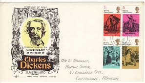 |
| eBay UK | CHARLES DICKENS ROYAL MAIL STAMPS PRESENTATION PACK. Free postage. | eBay UK | 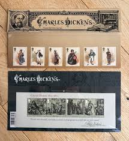 |
| Packs & Cards (@PacksandCards) • Facebook | 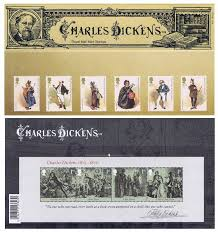 | |
| Flickr | ASAD - Charles Dickens | Flickr | 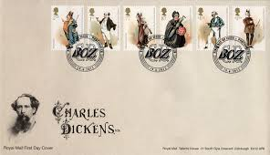 |
| eBay UK | GB 2011/12 ALL ROYAL MAIL FDC SOLD SINGLY. SINGLE POSTAGE CHARGE. UP TO 50% OFF | eBay UK | 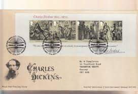 |
| we-sell-fdcs.co.uk | 1970-06-03 Charles Dickens Stamps Winterbourne FDC (94109) | British First Day Cover | GB First Day Covers | FDC Shop | 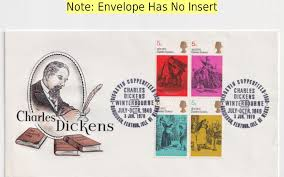 |
| Blogger.com | Rainbow Stamp Club: New Dickens stamps from Royal Mail | 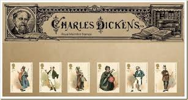 |
| eBay | Mint Royal Mail Stamp Presentation Packs 2010 - 2017 | eBay | 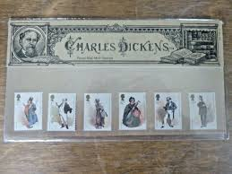 |
| Connie Berry | Remind Me Again: Who Is That Character? - Connie Berry | 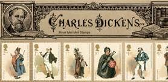 |
| Cover Collecting | 1970 Literary Anniversaries, Gemini Charles Dickens FDC, Block of 4 x 5d Dickens Stamps only, Ringwood | 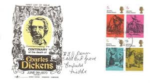 |
| entumbeza.co.za | SG MS3336 PRL) POSTE VATICANE LIRE LIT 40 FOGLIO MNH** FRANCOBOLLI POLONIAE Collezione Francobolli Uk | 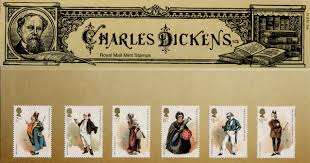 |
| eBay UK | GB 2012 Charles Dickens Mini Sheet First Day Cover, Tallents Hse, with insert | eBay UK | 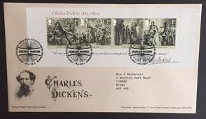 |
| Blogger.com | Commonwealth Stamps Opinion: Malta Issues A Set Of 88 Stamps. | 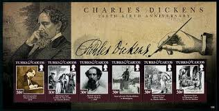 |
| eBay UK | GB 2012 CHARLES DICKENS MINIATURE MS3336 FIRST DAY COVER TALLENTS HOUSE POSTMAR | eBay UK | 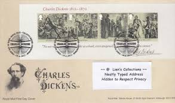 |
| Carol DuBosch Calligraphy | Envelopes – Carol DuBosch Calligraphy | 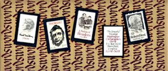 |
| Albany Stamps | 3 | GB Stamps | Albany Stamps | 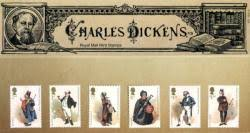 |
| Cover Collecting | Charles Dickens | 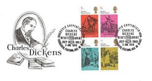 |
| eBay UK | Royal Mail First Day Covers, 2012, Sold Individually, FDC | eBay UK | 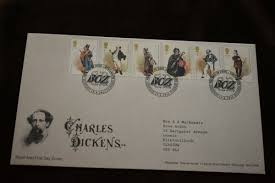 |
| Rowan S Baker | British Stamps | Browse Stamps | First Day Covers Collection | 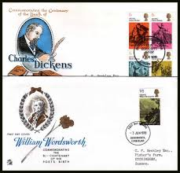 |
| Buckingham Covers | Buckingham Covers – Collectible First Day Covers & Stamps | 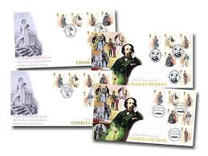 |
| eBay UK | Royal Mail First Day Cover Charles Dickens 2012 | eBay UK | 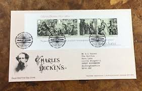 |
| eBay UK | 2012 GB Stamps and Miniature Sheet First Day Cover FDC x2 - Charles Dickens | eBay UK | 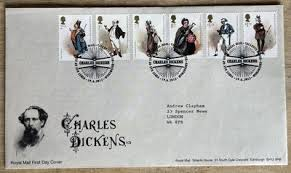 |
| eBay UK | 2012-2013 Royal Mail First Day Cover - Multi Listing | eBay UK | 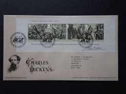 |
| Shutterstock | 7,000 Famous Book Stock Pictures, Editorial Images and Stock Photos | Shutterstock Editorial | 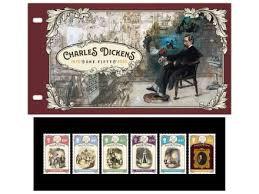 |
| Collect GB Stamps | pb4909 Charles Dickens | 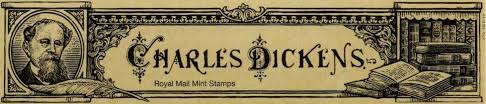 |
| we-sell-fdcs.co.uk | 1970-06-03 Charles Dickens Stamps London WC2 FDC (82888) | British First Day Cover | GB First Day Covers | FDC Shop | 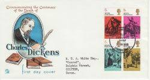 |
| Amazon.com | Charles Dicken's On London: "Charity begins at home, and justice begins next door.": Dickens, Charles: 9781780004426: Amazon.com: Books | 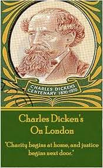 |
| Cover Collecting | Search results for: 'wc2 covers green occupation 1' | 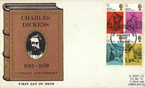 |
| eBay | The ULTIMATE Charles Dickens 150th Anniversary £2 Coin Cover (M743) | eBay | 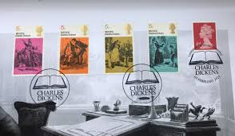 |
| Benham Philatelic | Shop by Theme - Charles Dickens | 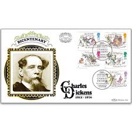 |
| gbandempirestamps.co.uk | Listings from 'ianlasoksmith' in GREAT BRITAIN COVERS > QEII Decimal Commemorative FDC & Event Covers > 2011-2015 > 2012 Birth Bicentenary of Charles Dickens - 10 items per page - Ending Soon | GB and Empire Stamps | 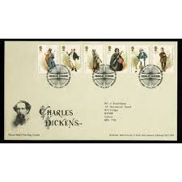 |
| norphil.co.uk | Charles Dickens - new Great Britain stamps, 19 June 2012 - Norvic Philatelics | 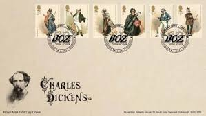 |
| eBay | Saint Vincent 2020 - Charles Dickens - Souvenir Stamp Sheet - Scott #4194 - MNH | eBay | 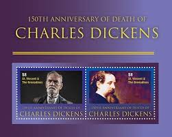 |
| we-sell-fdcs.co.uk | British First Day Cover | GB First Day Covers | FDC Shop | 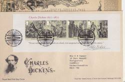 |
| LaBarre Galleries | Foreign Documents | 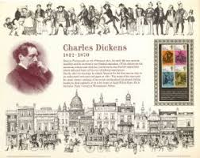 |
| IG Stamps | 2012 Pack Number 473 Charles Dickens Presentation Pack | 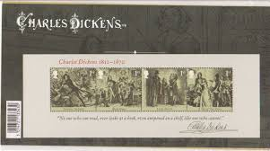 |
| Albany Stamps | charles dickens 1812 | GB Stamps | Albany Stamps | 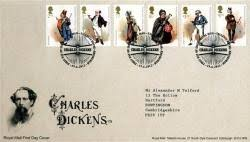 |
| Adam Partridge Auctioneers & Valuers | SHERLOCK HOLMES; a first day cover bearing the signature of Jeremy Brett. We have not authenticated this signature, please satisfy yourself as to the veracity of the item prior to bidding. | | 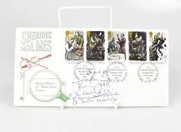 |
| Alamy | 1970 First Day Cover commemorating the 150th anniversary of the birth of Florence Nightingale Stock Photo - Alamy | 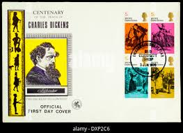 |
| Any postage stamp collectors in the area? I'm a philatelist looking to connect with others who share the same hobby. Possibly form a monthly group if there's enough interest! | 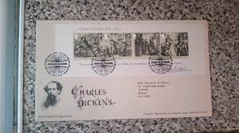 | |
| Mystic Stamp Company | 1504 - 2012 Turks & Caicos Islands - Mystic Stamp Company | 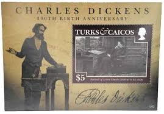 |
| Guernsey Stamps | www.guernseystamps.com | 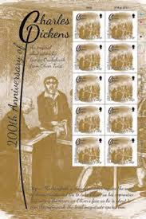 |
| Alamy | Dickens book great expectations hi-res stock photography and images - Alamy | 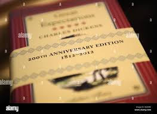 |
| eBay | Charles Dickens £2 Coins for sale | eBay | 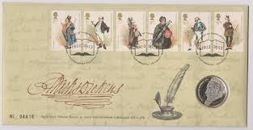 |
| Alamy | Buried in poets corner in westminster abbey hi-res stock photography and images - Alamy | 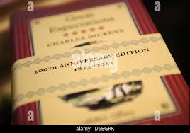 |
| Coin Hunter | 2012 Charles Dickens £2 Coin | Coin Hunter | 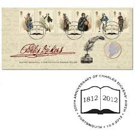 |
| Benham Philatelic | 100s Series | 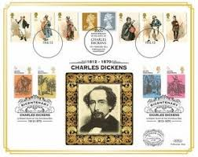 |
| janeaustenbooks.net | 14565 – Jane Austen Books | 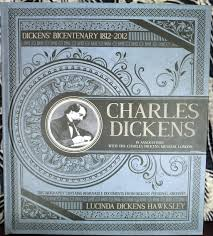 |
| PicClick UK | 2012 CHARLES DICKENS MS, GBFDC No 45 FDC, GBFDC Association - London SpHS £2.00 - PicClick UK | 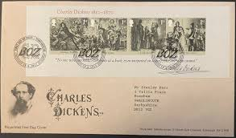 |
| Benham UK | Charles Dickens GB Customised Stamp Sheet | 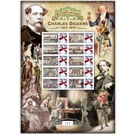 |
| eBay UK | June 1970; Stuart First Day Cover; Charles Dickens Death Anniversary | eBay UK | |
| Isle of Man Post Office | Charles Dickens Celebrated With a Commemorative Stamp Set by the Isle of Man Post Office - Isle of Man Post Office | |
| Cofton Collections | 2012 | |
| AbeBooks | Charles Dickens stamps. (Mr. and Mrs. Micawber (David Copperfield); Mr. PIckwick and Sam (The Pickwick Papers); David Copperfield and Betsy Trotwood (David Copperfield); Oliver asking for more (Oliver Twist). by 20th Century | |
| kanzlei-pieger.de | Charles Dickens Obras Más Famosas Colección Libros Charles Dickens Editados Por Su Primera Editorial Charles Dickens Libros | |
| eBay | Charles Dickens - ephemera about the writer & his London home (now a museum) | eBay | |
| eBay | Charles Dickens Stamps | eBay | |
| TouchStamps | Mini Sheet: Charles Dickens (Isle of Man 2020) - TouchStamps | |
| eBay | Guyana 2020 - Charles Dickens - Souvenir Stamp Sheet - Scott #4635 - MNH | eBay |